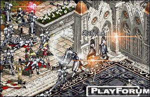

2003年1月24日 韓國測試伺服器檔案內容加入/更新了以下圖示：
韓國PvP伺服器亞丁攻城戰 來源：Lineage Playforum
英文翻譯：Lineage Compendium  亞丁攻城系統仍有部分問題，例如玩家能夠行過封閉了城門，在血盟得到城堡後沒有人被傳走等。 攻城戰在首4分鐘便第一次完結了，因為玩家直接攻擊反王肯恩。而他的女魔法師Cerenis則像巨龍一樣強勁，假如她的下個目標是你，除了死亡外你沒有甚麼事情可以做。當然，你不用擊倒她也能得到城堡，所以不用理她。 另外，稅款系統仍然沒有運作．．．
韓國測試伺服器1月22日更新內容 原文：韓國天堂官方網站公告
英文翻譯：Lineage Compendium 1. 攻城時間重新安排，PvP伺服器會在1月23日18:05，而non-PvP則在1月24日18:05。在non-PvP伺服器中上一次的勝利血盟在攻城前將會擁有城堡的按制權。
2. 增加了阿魯巴的攻擊範圍。
3. 修正了/pledge指令不能運作的錯誤。
4. 王族在使用呼喚盟友魔法後，在盟友未選擇y/n前移動了的話，此魔法將會無效。
5. 修正了部分遊戲錯誤。 |